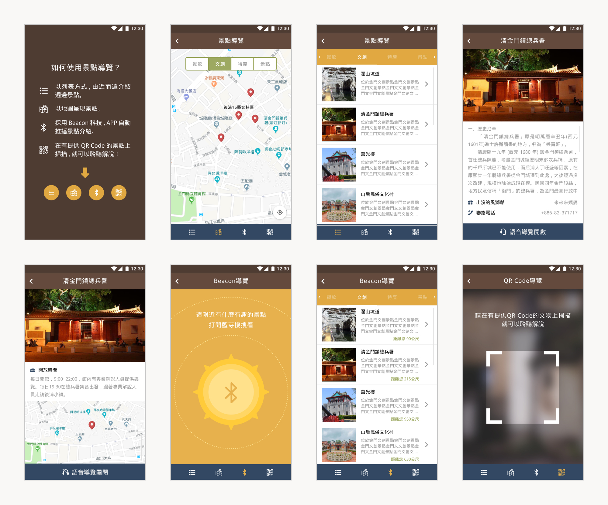

街區數位轉型
風獅爺x瘋數位
模範街是觀光客到金門必去的觀光景點，街內以傳統型店家為主，多為傳統零售與名特產店。這些店家老闆以年長者居多，大多不太會使用電子產品，也較少接觸創新應用科技，街區內更缺乏軟硬體。街區幾乎沒有創新科技之應用，未來可能導致產業落後，降低旅客前來旅遊的意願。有鑑於此，我們於計畫中導入了數位風獅爺 AR 互動體驗、QRcode 導購、Beacon 微定位和多元行動支付等服務，讓人潮再度帶向老街，並持續創造出回流客群。
設計目標 Design Goal
融合金門老街人文故事與在地風獅爺文化價值，為老街注入數位科技，進而活化老街使老街再生。
Areas of Work :
UI、Branding、Mobile App
Client :
經濟部中小企業處
Date :
September 7, 2019
Role :
設計指導、UI/UX 設計、前端程式撰寫
標誌設計 Logo Design
設計系統 Design System
行動應用程式 Mobile Apps

應用設計 Application Design